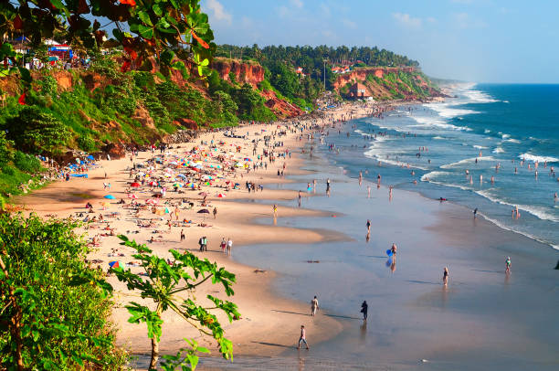
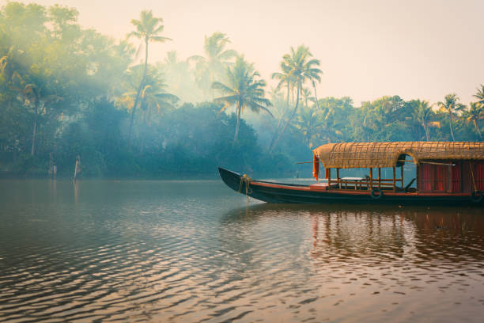
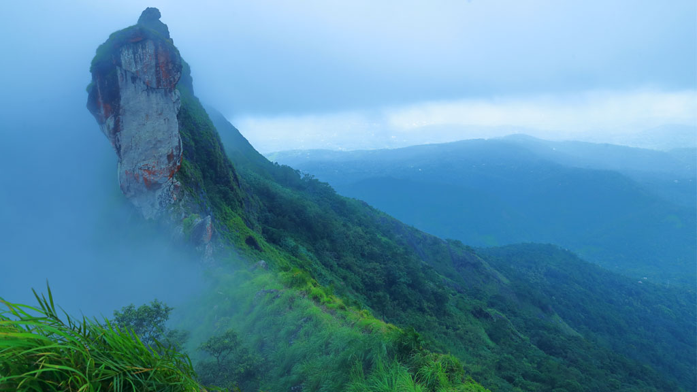
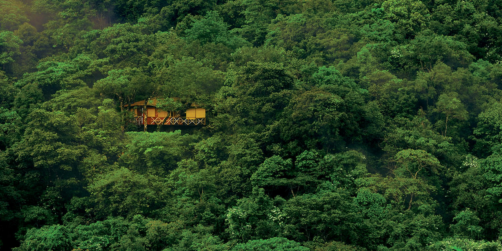

KERALA
Caressed by the Arabian Sea and Western Ghats, Kerala has 14 districts, each with its unique tourist destinations...

Kerala has many places to visit, including beaches, waterfalls, and national parks.

Beaches
Tourist attraction with views of the sea and lake

Backwaters
Backwaters are a series of interconnected lakes and rivers that run parallel to the coast, and their calm waters make for a perfect spot to relax and escape the hustle and bustle of city life.

Mountains
Munnar is the most famous hill station in Kerala. Apart from Munnar, the top 5 hill stations in Kerala are Wayanad, Vagamon, Idukki, Ponmudi, and Thekkady. There are many beautiful hill stations near Kochi as well.

Forest
Kerala has many forest tourist places, including wildlife sanctuaries and other forests.